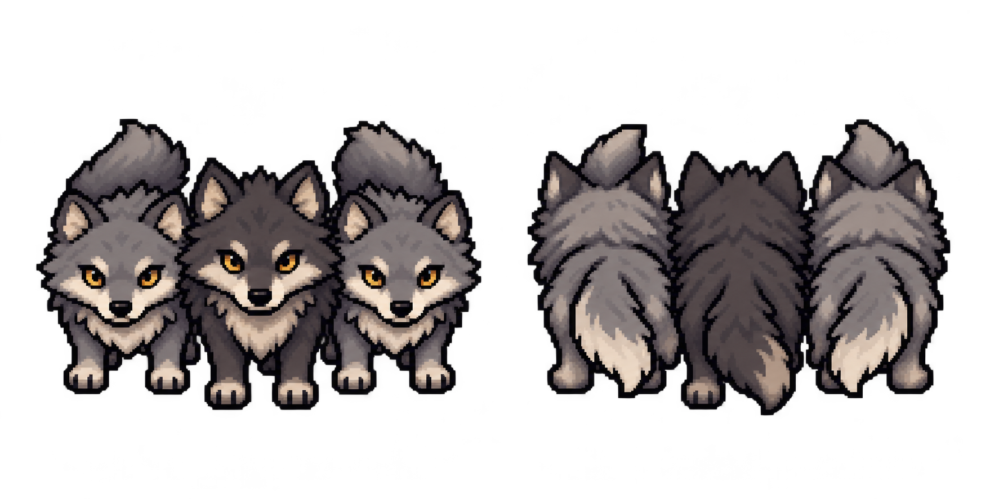
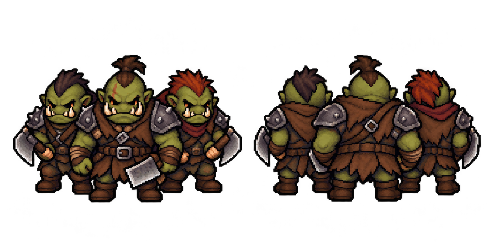

Règles et fonctionnement
Sprites des ennemis et de la faune sur la carte
Choisir une apparence de groupe sans inventer ses troupes ou son comportement.
Comprendre ce que cela implique
L’apparence et l’alignement sont indépendants : un loup ou un orc peut être configuré comme ennemi, neutre ou allié. L’illustration seule ne dit donc pas si le groupe attaquera.
Les modèles commencent avec une armée vide. Le concepteur doit renseigner les troupes du catalogue ; les statistiques animales et les comportements spécifiques ne sont pas déduits de l’image.


Détails de référence
Texte de référence mis en forme et conservé dans l’historique de cet article. Les paragraphes datés peuvent décrire une évolution ou une étape antérieure.
Lot du 18 octobre 2026
Six planches PNG transparentes sont préparées dans app/assets/groups/ :
goblins-map-front-back-v1.png: trois gobelins.orcs-map-front-back-v1.png: trois orcs.wolves-map-front-back-v1.png: trois loups.bear-map-front-back-v1.png: un ours.boar-map-front-back-v1.png: un sanglier.deer-map-front-back-v1.png: un cerf.
Chaque planche contient deux vues statiques : face (sud) à gauche, dos (nord) à droite. Le style reprend les héros et brigands existants : pixel art JRPG, proportions compactes, contours sombres et caméra légèrement plongeante. Les groupes sont des représentations décoratives, pas des indications d'effectif.
Utilisation dans l’éditeur de quête
Dans PNJ, GA & objets, les six boutons de modèles ajoutent une fiche de groupe autonome. Choisir l’Alignement : Ennemi (enemy), Neutre (neutral) ou Allié (ally). Les modèles commencent neutres ; une même apparence peut avoir les trois alignements.
Le champ archetypeId vaut goblins, orcs, wolves, bear, boar ou deer. Le serveur valide et conserve cette référence et l’alignement à l’export, dans les sauvegardes et lors des créations de quête. Une apparence connue sans alignement devient neutre. Les anciens GA sans ces champs conservent leur fonctionnement.
Configurer le propriétaire, la position, l’armée et la mission, puis cliquer Créer ce GA dans la quête courante. Régler ensuite le déclencheur et le lieu dans la quête. La création est une copie de la fiche à cet instant, pas une liaison mise à jour automatiquement. Son identifiant peut servir de cible à l’action Combattre.
Les modèles ont une armée vide : aucun effectif ni statistique animale n’est inventé. Les troupes doivent être renseignées avec les types du catalogue serveur. Les comportements spécifiques de chasse ou de fuite restent à définir.
L’alignement indique la relation générale envers les joueurs. Un groupe explicitement neutre ou allié n’initie pas d’attaque automatique contre un héros, même avec un comportement agressif. Un ennemi suit les conditions existantes de comportement et de portée. Pour les GA non possédés par un joueur, le serveur utilise le contrôleur correspondant à cet alignement lors des résolutions. Les règles de terrain restent inchangées.
Les groupes visibles utilisent ces sprites : dos vers le nord de la caméra, face dans les autres orientations, sans marche animée ni miroir. Un visuel personnalisé explicite reste prioritaire. Le catalogue partagé est app/js/core/autonomous-group-catalog.js ; les rectangles des poses sont mesurés sans retoucher les pixels par scripts/measure-enemy-sheets.mjs.
L'aperçu playtest/enemy-map-sprites.html affiche les six planches sur fond clair et vert. Les sources générées sont conservées sans retouche.
Génération
Outil intégré imagegen, fond transparent. Références de style : brigands-jrpg-walk-v1.png et hero-jrpg-walk-v2.png.
Le jeu de prompts exact est conservé dans enemy-map-sprite-prompts.json. Consignes communes : deux vues statiques face/dos, mêmes sujets dans les deux vues, caméra du dessus légèrement inclinée, pixels lisibles à petite taille, marges transparentes, sans texte, décor ni ombre portée.